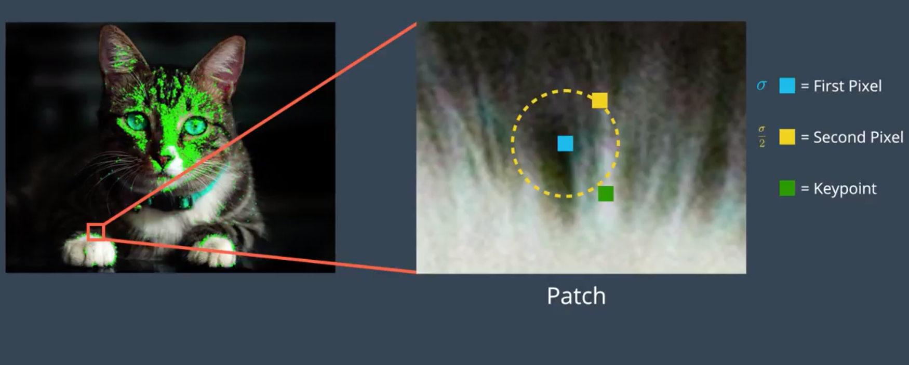

ORB-SLAM3保姆级教程——详解特征点提取
前言
ORB-SLAM系列使用FAST关键点提取+ORB特征描述子做跟踪、重定位、回环检测。在ORB-SLAM几篇论文中，图像特征提取部分都是一带而过，基本没有详细说明特征提取的方法。但是在实际的代码实现中，这部分内容其实还是做了不少工作的。Opencv中已经对ORB特征提取进行了实现：OpenCV-orb.cpp。在ORB的原始论文：ORB: an efficient alternative to SIFT or SURF已经考虑到了特征点提取的多尺度问题，使用图像金字塔的方式对多个尺度的图像进行ORB特征提取。但是在ORB-SLAM系列中，为了让特征点分散更加均匀，ORB-SLAM的作者根据OpenCV的实现进行了修改，让特征点尽可能地分散到图片的整个区域而不是只有在纹理明显的区域有特征点。不仅如此，在ORB-SLAM1和ORB-SLAM2及之后的代码，对于特征点平均分布的实现还有所不同，可见ORB-SLAM是在不断的迭代改进中成熟的。
ORB-SLAM中图像特征点具有的性质
- 尺度不变性（ORB本身具有的特点）
- 旋转不变性（ORB本身具有的特点）
- 分布均匀（ORB-SLAM的实现）
感悟
看完了ORB-SLAM3中关于特征提取的实现代码，深感做科研和算法的不易。在论文中轻轻带过的几句话在实现中就需要两千多行代码（虽然大部分是基于OpenCV的实现）。另外，在ORBSLAM1中为了实现特征点的均匀分布，是将图像切割成与特征点数量成比例的小区块，每个区块提取5个特征点，点数不够的区块由其他区块补足，但是从ORBSLAM2后，这部分的实现变成用四叉树分割图像。这部分的改进应该更多是为了效率考虑，具体效率还没有进行测试。
本文结构组织
本文首先对ORB特征提取做一个详细的介绍，说清楚FAST关键点和BRIEF特征以及rBRIEF特征；然后说明白ORB-SLAM中为了将特征点尽可能均匀地分布到图像中进行的两种实现。
ORB特征描述
论文：ORB: an efficient alternative to SIFT or SURF
图像的特征描述一般有两个步骤：
- 关键点的选取。经典的有Harris Corner，ORB中使用的是FAST角点检测
- 关键点特征描述子。经典的描述子很多，比如SIFT等。ORB中使用的是改进后的BRIEF描述子，具有角度不变形，叫做rBRIEF
FAST关键点
参考：OpenCV FAST Corner Detection 论文：Machine learning for high-speed corner detection
FAST(Features from Accelerated Segment Test) 在论文 Machine learning for high-speed corner detection 中被提出。 相比于其他角点检测，比如Harris Corner或者SIFT的角点检测过程DoG 都要更快，更适合应用到实时性要求高的任务，比如SLAM中。
FAST角点提取
FAST角点的核心思想是对于像素\(p\)，如果\(p\)与其周围的像素值差异比较大，则认为\(p\)是一个角点。

算法步骤：
- 在图像中选择一个像素\(p\)，令其像素值为\(I_p\)
- 以\(p\)为中心，往上下左右扩张3个像素值，并以\(p\)为中心画圆，以对称的方式选择圆上16个像素。如上图所示
- 选择一个阈值\(t\)，如果第二步中的16个像素有连续\(n\)（\(n\)一般为12）个像素的值都大于\(I_p+t\)或者小于\(I_p-t\)，则认为\(p\)是角点
- 快速测试。执行第3步前可以执行一种快速测试的方法：先测试点1和点9，如果这两个点与\(p\)的像素值差都小于\(t\), 则\(p\)不可能是角点，否则继续测试点5和点13。只有当1、5、9、13这4个点中至少有3个点与\(p\)的像素差大于阈值\(t\)才进行第3步的检测。
上面这种判断方法叫做Segment Test
用机器学习的方法确定16个点的检查顺序
使用上面的16个点的顺序检查不一定是最好的，所以在论文中使用了机器学习的方法确定这16个点的检查顺序。具体来说，这里面用了决策树来在训练集上进行训练，得到一个训练好的决策树。这个决策树用来对其他图片的点做判断是否采纳为角点。阅读这部分内容需要决策树的基础知识，否则很难看懂这部分内容（虽然很简单）。
PS:如果不清楚决策树是什么或者不清楚决策树构建过程的读者要先阅读文末的附录A附录A
算法步骤：
- 为目标域选择一个训练集
- 为训练集中的所有图片的所有像素计算圆圈的16个点（见图1）的像素值
- 对于像素\(p\)，其旁边的16个点中的每一个像素\(x\)可以根据下面的关系划分为3个状态
\[ S_x = \begin{cases} d, & I_x \leq I_p - t & \text{(darker)}\\ s, & I_p - t < I_x < I_p + t & \text{(similar)}\\ b, & I_p+t \leq I_x & \text{(brighter)} \end{cases} \]
- 这样子，每个像素就可以得到一个长度为16的特征向量，类似
[ddddddssbbbbddss] - 使用上文中的
Segment test的方法确定训练集中的角点（也就是为每个像素赋予了是否是角点的标签），令标签为\(K_p\) - 定义数据集\(S\)的熵如下：
\[ H(S) = (c+\bar{c})log_2(c+\bar{c}) - clog_2c - \bar{c}log_2\bar{c} \]
其中
- \(c\) 指数据集中的角点数量
- \(\bar{c}\) 指非角点的数量
上面这个公式其实就是用熵的公式(A-1)计算出来的，相差一个常量而已
- 构建决策树，对于16个点中的每一个点\(x\)，数据集可以分成三个子集（根据第3个步骤，每个点的特征是一个长度为16的向量）\(P_d,P_s,P_b\)。对于构建决策树的过程，信息增益可以定义为如下公式：
\[ IG(x) = H(P) - H(P_d) - H(P_s) - H(P_b) \]
上面的公式与附录A中的公式(A-2)基本相同，不过少了每个子集的概率。
构建完决策树后对于新的角点，则可以直接使用决策树判定是否是角点。
最大值抑制（Non-maximal Suppression）
跟很多的角点监测器一样，需要增加最大值抑制取出相邻的角点。
BRIEF特征描述子
论文：Binary Robust Independent Elementary Features 参考：OpenCV BRIEF
BRIEF(Binary Robust Independent Elementary Features)，区别于其他很多描述子，BRIEF特征描述子使用二进制向量的形式作为特征的表达。一般是256位二进制向量，也就是只需要32字节（32x8=256）。
 上图来源：https://www.cnblogs.com/alexme/p/11345701.html
算法步骤：
- 先对图像进行高斯模糊，去除高频噪声对特征的干扰
- 在选择的关键点附近选取一个圆形范围;圆形范围的选择一般是以关键点为中心，边长为31个像素的正方形的内接圆
- 在圆内随机挑选点对，点对里第一个点像素值如果大于第二个点的像素值，则描述子对应位的值为1,否则为0
- 重复第3步，直到描述子长度符合要求（256位需要挑选256个点对）
特殊之处
- 点对的挑选策略其实是有很多的，比如均匀分布采样、高斯分布采样、完全随机采样等，[BRIEF的原始论文][#BRIEF]里也有对这些采样方法举例;但是在ORB的论文ORB: an efficient alternative to SIFT or SURF里，采用的是一种机器学习的方法来确定点对的挑选顺序，大概意思就是用不同的点对挑选顺序构建多个特征数据集，然后计算这些数据集的方差、特征的平均值，挑选出一种采样方法使得方差较大、平均值接近0.5的挑选顺序。另外要注意的是， 在OpenCV的视线中，256个点对的挑选顺序是硬编码进代码，ORB-SLAM也采用的是OpenCV的实现方式
- 正方形内接圆的计算由于是在像素层面（离散）计算，为了保证对称性，计算的方式是先算0-45度角内的圆边界，然后对称到90度，再算到整个圆。这部分也可以参看OpenCV的实现
rBRIEF描述子
BRIEF描述子的缺点是对旋转敏感。在做特征点配对过程中，我们希望的是特征描述子是与旋转无关的。为了解决BRIEF描述子对旋转敏感的问题，在ORB特征提取中加入了局部旋转计算操作，将局部图像旋转到主方向之后再计算BRIEF特征，称为rBRIEF
局部旋转角（计算BRIEF特征计算时图像块的旋转）采用的方法叫灰度质心法（intensity centroid)，实现也十分简单，就是根据像素值计算图像块的质心\((m_{10}, m_{01})\)，质心与几何中心的连线的方向就作为图像块的方向。公式如下：
计算出图像的方向后，在计算BRIEF特征描述子的时候，先将区块根据主方向旋转，然后再计算BRIEF特征。但是实现起来会显得很巧妙。OpenCV-ORB-旋转操作
图像金字塔
为了提取出的特征点能够在多个尺度进行匹配，ORB特征提取采用图像金字塔的方式，将原始图像以一定层级缩放，在缩放后的图像后进行特征点提取（角点检测+描述子）。然后将所有特征点坐标放缩回原始分辨率图像坐标。这样得出的特征点就具有了尺度信息。 Opencv-ORB-imagePyramid
ORB-SLAM 均匀分布的ORB特征点
ORB-SLAM中对于图像的特征提取，除了应用ORB特征提取器之外，还额外增加了让特征点尽量在图像中分布均匀的举措。
在ORB-SLAM1中的实现： 将原始图像平均分成n/5个区块，n是特征点的数量。每个区块进行FAST特征点和rBRIEF描述子计算;特征点数量不足5的区块剩下的特征点平均分到其他区块。其他区块不足以补充的继续将不足的特征点再分到其他区块中，直到所有特征点数量分完。
在ORB-SLAM2及之后的实现： 采用四叉树的方法，上下左右分割图像块，直到图像块数量等于目标特征点数量或者块中只有一个特征点则停止分割。
下面详解这两种实现
均分切割法（ORB-SLAM1中使用）
代码：ORBextractor::ComputeKeyPointsOld
算法步骤：
1 | 提前计算好每一层需要的关键点数量（根据图像金字塔放缩比例等比例分配） |
四叉树分配法（ORB-SLAM2及之后使用）
代码：ORBextractor::ComputeKeyPointsOctTree
算法步骤：
1 | 提前计算好每一层需要的关键点数量（根据图像金字塔放缩比例等比例分配） |
实现中的一些细节
在这部分的实现中，有用到一些trick，这里顺便做一下记录：
- 四叉树分裂的过程并没有使用递归的方式实现，用递归的方式实现看起来代码可能简单很多，但是用for循环可能在效率上更快
- 在分裂的过程中会判断下一次分裂后节点的数量是否可能会大于目标特征点数量，如果会的话会进入另一个循环。但是仔细看实现后，感觉这部分逻辑是可以简化的。
- 实际实现并没有上面算法过程看起来这么“干净”。为了确保算出来的特征点可以计算出特征（rBRIEF特征需要在关键点周围扩展出31像素的正方形），需要在原始图像往内收缩一定的像素，在收缩后的区域进行关键点提取。同时，FAST角点需要在像素周围扩展3个像素，所以又需要往外扩展3个像素，确保能够正确计算FAST角点。这些内容细节单纯靠论文或者讲解是很难体会到的，只有亲自看一遍代码才知道这里面的奥妙。
完整代码
默认参数：
- 特征点数量：1000
- 图像金字塔层数：8
- 每层的缩放系数：1.2
- ORB特征Patch大小：31（与原始ORB一致）
- ORB特征计算的点对选取：与OpenCV实现相同（提前选定的固定的点对序列）
附录A——决策树
参考：维基百科-ID3决策树
决策树（Decision Tree）在传统机器学习中是一种常见的分类方法。决策树是一种监督学习方法，需要在数据集上训练。 决策树构建一个树状结构用来分类。决策树中包含一个根节点、若干个内部节点和若干个叶节点
- 每个内部节点表示对某一个属性进行判断分类。每个内部节点产生的分支数量是这个属性的可能取值的数量
- 每个叶节点代表一种分类结果
在训练时，用数据集决定每一个内部节点应该采用哪一个属性进行分支，直到产生的节点里面的数据都是同一种类。
在预测时，根据训练好的决策树，对输入的样本按照决策树的顺序，根据属性进行分类，直到叶子节点。每个叶子节点对应一种 分类结果，走到叶子节点也就意味着成功进行分类。
特征选择
如何在每一步决定要用哪个特征进行判断是决策树算法中难点。不同的算法会使用不同的策略根据训练集选择特征。这里主要介绍ID3算法, 这也是FAST中使用的决策树算法。
熵（Entropy）
熵表示不确定性，也是信息量的大小。熵大代表不确定性高，信息量也大。
对于数据集\(S\)，熵的定义如下：
\[ H(S) = - \sum_{x \in X}p(x)log_2p(x)\tag{A-1} \]
其中
- \(S\)指数据集;在ID3迭代构建决策树的时候，S指的是当前的节点分配到的数据
- \(X\)指总共的类别数量
- \(p(x)\)指类别\(x\)占\(S\)总数的比例（概率）
信息增益（Information gain）
选择特征的时候，我们希望选择的特征能够最好地划分数据集，也就是带来最多的信息增益。 信息增益\(IG(A)\)表示使用属性\(A\)对数据集\(S\)进行划分前后熵的减少量。也就是使用属性\(A\)对数据集进行划分时，有 多少不确定性减少了。
\[ IG(S,A) = H(S) - \sum_{t\in T}p(t)H(t) = H(S) - H(S|A)\tag{A-2} \]
其中
- \(T\) 指由属性\(A\)将集合\(S\)划分成多少个集合，也就是属性\(A\)的可能取值数量。\(S = \cup_{t\in T}t\)
- \(p(t)\)指子集\(t\)占\(S\)的比例
- \(H(t)\)指子集\(t\)的熵，计算方式与公式(A-1)一样
PS: 要区分数据集的类别\(X\)和根据属性划分的集合\(T\)；数据集的类别是我们要将每个样本打上的标签，无论是哪个子集，类别数都是一样的。 但是不同的属性可能有不同的可能取值数量，比如属性\(A\)可能取值\(1,2,3\)，那么就会划分出三个不同的子集;属性\(B\)可能取值\(0,1\)，那么就会 划分出两个子集
伪代码（ID3算法）
1 | def createID3Tree(dataSet, attributeIndices): |